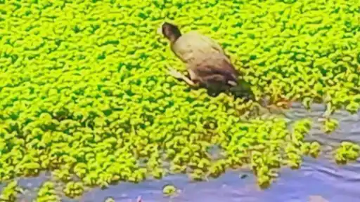
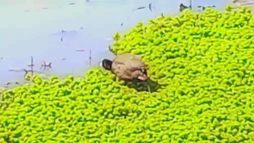
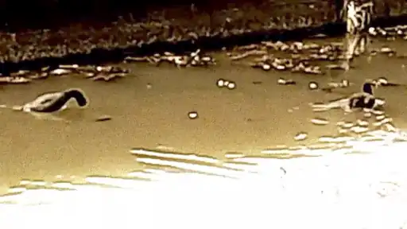
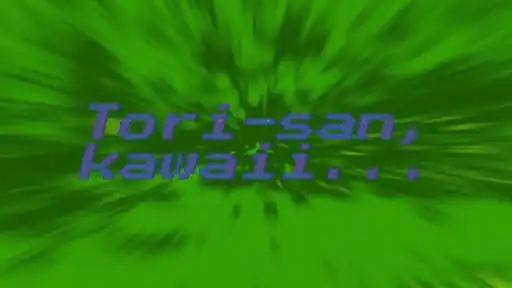
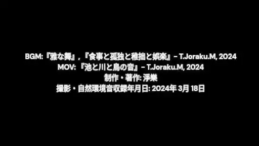
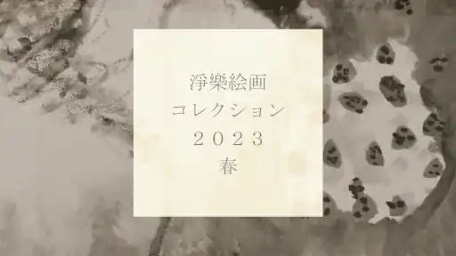
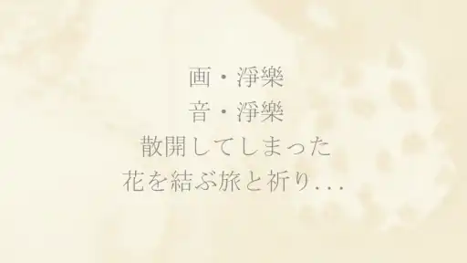
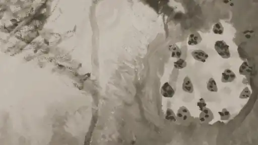
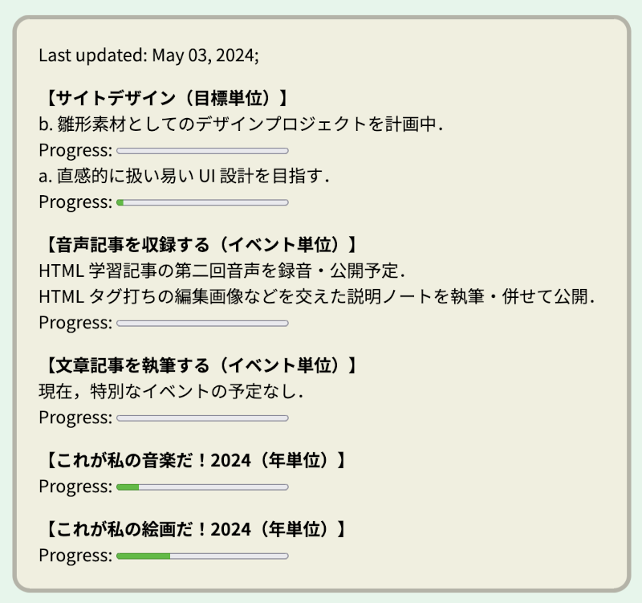
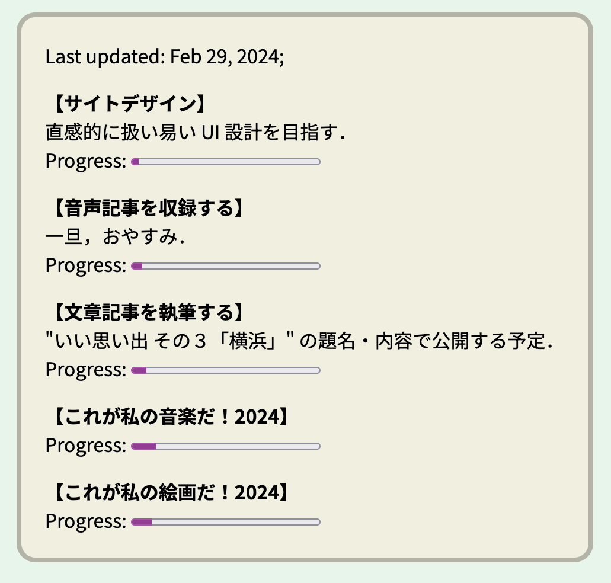

Other Contents
"その他のコンテンツ群"
非常に枠を逸脱してしまっている作品並びに情報たちが詰まった宝の山ゾーンであります．
作品目次
映像領域（ムービー作品）
以下 11 作品の制作・著作: Sys. T. Miyatake, 2023-2024
"3 views...",
Mar_27_2024 (Miyatake Lab, 2024)
ジャンル: ホラー，面白系，？？？;
【再生回数３回】ホラーで，支援的で，コミカルで...（鑑賞してからのおたのしみ！）
Google Drive ストレージを参照しており，下記のリンクから再生できると思います（ひょっとすると，まだ処理中かもしれません）．
"3 views..." Video Work, (Mar 27, 2024). サイト公開．
ファイル再生について
Google LLC https://www.google.com/ のクラウドストレージサービス，Google Drive に保存されているファイルを参照しています．
サイトにお越しの皆さまに鑑賞いただくことを目的として，どなたでも閲覧・再生可能な状態に設定してあります．
当サイト利用者さまがオンラインサーバ上でファイルを再生してお楽しみいただく以外の，たとえばローカルへの保存などの行為はお控えくださいますよう，お願い申し上げます．
参考 GIF アニメーテッド画像:

鳥たちを観察します,
Mar_18_2024 (Miyatake Lab, 2024)
ジャンル: 動物，ゲーム，癒し;
【なかよし鳥さん】溜池でフィールド録音・ビデオ撮影を行い，懐かしい風情の音楽を作曲し，ミックスしてみました．
映像エフェクト（セピアフィルタ，極度のハイコントラスト効果など）を施している関係で胴体が茶色に見えますが，実際は日光が当たって反射している灰黒色のボディです！
彼はおそらくツル目クイナ科の オオバン（大鷭）の仲間 だと思われます！額と嘴の色が白く，頭の動かし方や鳴き声（鳥から遠い位置から収録された音声なので多少細く聴こえますが！）も個性的でかわいい！ですね．
Google Drive ストレージを参照しており，下記のリンクから再生できると思います．
"Mar18_2024_bird-san" Video Work, (Mar 19, 2024). サイト公開．
ファイル再生について
Google LLC https://www.google.com/ のクラウドストレージサービス，Google Drive に保存されているファイルを参照しています．
サイトにお越しの皆さまに鑑賞いただくことを目的として，どなたでも閲覧・再生可能な状態に設定してあります．
当サイト利用者さまがオンラインサーバ上でファイルを再生してお楽しみいただく以外の，たとえばローカルへの保存などの行為はお控えくださいますよう，お願い申し上げます．
参考フレーム画像（5枚目余白編集）:

ファンシィ・エレベーター,
Mar_08_2024 (Miyatake Lab, 2024)
ジャンル: 面白系，意味深，癒し;
【ノスタルジア】壊れかけのファンタジィ【狂おしの10代】
幻想的でふわふわとした曲調で，昔の風景が夢の中のような映像とともに浮かび上がる！ワンダフル・アポクリン！
▶︎ ウェブサイト設置プレイヤー版
（申し訳ありませんが，末尾が僅かに不完全です．）
▶︎ クラウド型オンラインストレージ版
（よろこばしいことに，ファイルは完全です．）
Google Drive ストレージを参照しており，下記のリンクから再生できると思います．
ファイル再生について
Google LLC https://www.google.com/ のクラウドストレージサービス，Google Drive に保存されているファイルを参照しています．
サイトにお越しの皆さまに鑑賞いただくことを目的として，どなたでも閲覧・再生可能な状態に設定してあります．
当サイト利用者さまがオンラインサーバ上でファイルを再生してお楽しみいただく以外の，たとえばローカルへの保存などの行為はお控えくださいますよう，お願い申し上げます．
研究室の内緒のビデオ,
Mar_01_2024 (Miyatake Lab, 2024)
ジャンル: 面白系，意味深;
【謎の人物たち，フェチっと参上！】これは名言なのか，迷言なのか，はたまた...！
Google Drive ストレージを参照しており，下記のリンクから再生できると思います．
ファイル再生について
Google LLC https://www.google.com/ のクラウドストレージサービス，Google Drive に保存されているファイルを参照しています．
サイトにお越しの皆さまに鑑賞いただくことを目的として，どなたでも閲覧・再生可能な状態に設定してあります．
当サイト利用者さまがオンラインサーバ上でファイルを再生してお楽しみいただく以外の，たとえばローカルへの保存などの行為はお控えくださいますよう，お願い申し上げます．
参考画像:

淨樂絵画コレクション 2023春 (Miyatake Lab, 2023)
ジャンル: 絵画;
私がアナローグな絵画作品制作に没頭していた 2023 年 春の代表作 4 作品 (6 バージョン) をまとめた集大成ビデオになります．
この作品は，Google Drive ストレージを参照しています．下記のリンクから再生可能に設定しています．
ファイル再生について
Google LLC https://www.google.com/ のクラウドストレージサービス，Google Drive に保存されているファイルを参照しています．
サイトにお越しの皆さまに鑑賞いただくことを目的として，どなたでも閲覧・再生可能な状態に設定してあります．
当サイト利用者さまがオンラインサーバ上でファイルを再生してお楽しみいただく以外の，たとえばローカルへの保存などの行為はお控えくださいますよう，お願い申し上げます．
参考フレーム画像:

The Three Videos (Miyatake Lab, 2022 ∧ SYS.T.Miyatake, 2024)
ジャンル: 面白系;
私が映像作品制作に集中していた 2022 年の代表作 3 作品をまとめた集大成ビデオになります．
この作品は，Google Drive ストレージを参照しています．下記のリンクから再生可能に設定しています．
ファイル再生について
Google LLC https://www.google.com/ のクラウドストレージサービス，Google Drive に保存されているファイルを参照しています．
サイトにお越しの皆さまに鑑賞いただくことを目的として，どなたでも閲覧・再生可能な状態に設定してあります．
当サイト利用者さまがオンラインサーバ上でファイルを再生してお楽しみいただく以外の，たとえばローカルへの保存などの行為はお控えくださいますよう，お願い申し上げます．
参考フレーム画像 (部分・編集済・題目風味がします):


地団駄ラップ「束の間の幻」(T.Miyatake Demo, 20??)
ジャンル: 面白系;
"マジメ人間・T" が，がんばってラップに挑戦したようだ！この慕情は，もう二度と味わえないことだろう！（意味不明）
この作品は，Google Drive ストレージを参照しています．下記のリンクから再生可能に設定しています．
ファイル再生について
Google LLC https://www.google.com/ のクラウドストレージサービス，Google Drive に保存されているファイルを参照しています．
サイトにお越しの皆さまに鑑賞いただくことを目的として，どなたでも閲覧・再生可能な状態に設定してあります．
当サイト利用者さまがオンラインサーバ上でファイルを再生してお楽しみいただく以外の，たとえばローカルへの保存などの行為はお控えくださいますよう，お願い申し上げます．
Trioecy-senced Virtual Arts (Studio Miyatake, 202?)
ジャンル: 意味深;
一瞬のビデオですが，当時の自らが展開する制作概念「TSVA」を表したムービーです．
この作品は，Google Drive ストレージを参照しています．下記のリンクから再生可能に設定しています．
"Trioecy-senced Virtual Arts" Video Work
ファイル再生について
Google LLC https://www.google.com/ のクラウドストレージサービス，Google Drive に保存されているファイルを参照しています．
サイトにお越しの皆さまに鑑賞いただくことを目的として，どなたでも閲覧・再生可能な状態に設定してあります．
当サイト利用者さまがオンラインサーバ上でファイルを再生してお楽しみいただく以外の，たとえばローカルへの保存などの行為はお控えくださいますよう，お願い申し上げます．
詩集廟の呪い (Studio Miyatake, 202?)
ジャンル: ホラー，面白系，じゃいけん要素;
私がプロデュースするマルチメディア作品 "Anthological Mausoleum" 詩集廟プロジェクトにおける「戦慄が走る（？）ムービー」かもしれません...
この作品は，Google Drive ストレージを参照しています．下記のリンクから再生可能に設定しています．
"Anthological Mausoleum: 詩集廟の呪い" Video Work
ファイル再生について
Google LLC https://www.google.com/ のクラウドストレージサービス，Google Drive に保存されているファイルを参照しています．
サイトにお越しの皆さまに鑑賞いただくことを目的として，どなたでも閲覧・再生可能な状態に設定してあります．
当サイト利用者さまがオンラインサーバ上でファイルを再生してお楽しみいただく以外の，たとえばローカルへの保存などの行為はお控えくださいますよう，お願い申し上げます．
zero? (Studio Miyatake, 202?)
ジャンル: 意味深;
刹那です．ここだけの話ですが，聴こえるメロディは小学生のときに作曲して吹き込んだ「自分専用・目覚まし時計BGM」と同じ旋律を時を超えて採用したという伝説が語り継がれているとか，いないとか．
この作品は，Google Drive ストレージを参照しています．下記のリンクから再生可能に設定しています．
ファイル再生について
Google LLC https://www.google.com/ のクラウドストレージサービス，Google Drive に保存されているファイルを参照しています．
サイトにお越しの皆さまに鑑賞いただくことを目的として，どなたでも閲覧・再生可能な状態に設定してあります．
当サイト利用者さまがオンラインサーバ上でファイルを再生してお楽しみいただく以外の，たとえばローカルへの保存などの行為はお控えくださいますよう，お願い申し上げます．
Joraku Room's Music Box (Miyatake Lab, 202?)
ジャンル: 癒し;
淨樂部屋のオルゴールという作品です．切ない子供が一生懸命響かせてくれる素朴な演奏と，夢のような静止画が合体した魔法のような体験をご堪能ください．
この作品は，Google Drive ストレージを参照しています．下記のリンクから再生可能に設定しています．
"Joraku Room's Music Box" Video Work
ファイル再生について
Google LLC https://www.google.com/ のクラウドストレージサービス，Google Drive に保存されているファイルを参照しています．
サイトにお越しの皆さまに鑑賞いただくことを目的として，どなたでも閲覧・再生可能な状態に設定してあります．
当サイト利用者さまがオンラインサーバ上でファイルを再生してお楽しみいただく以外の，たとえばローカルへの保存などの行為はお控えくださいますよう，お願い申し上げます．
宝物置き場（デモテープ）
以下 18 作品の制作・著作: Sys. T. Miyatake
タンシオレモン
タグ: たん，しお，れもん;
2024年10月23日公開デモ
『たんしお檸檬 (Miyatake Lab, 2024)』
たんしおしちゃお！檸檬モンモン！たん・たん・たぁ〜ん♪
この作品は，Google Drive ストレージを参照しています．下記のリンクから再生可能に設定しています．
"Tan Shio Lemon" Demo-tape Audio Work
ファイル再生について
Google LLC https://www.google.com/ のクラウドストレージサービス，Google Drive に保存されているファイルを参照しています．
サイトにお越しの皆さまに鑑賞いただくことを目的として，どなたでも閲覧・再生可能な状態に設定してあります．
当サイト利用者さまがオンラインサーバ上でファイルを再生してお楽しみいただく以外の，たとえばローカルへの保存などの行為はお控えくださいますよう，お願い申し上げます．
たのしいじかん
タグ: レトロ，ループ，ゲーム;
2024年10月23日公開デモ
『たのしいじかん (Miyatake Lab, 2024)』
レトロゲームのループするBGM（まるでモード選択画面！）のようなインスト楽曲！これはまさにたのしいじかんですね！
※実験時のままエクスポートした為に，音が他のものより小さくなっております．各自で調整いただけますと幸いでございます．
この作品は，Google Drive ストレージを参照しています．下記のリンクから再生可能に設定しています．
"Tanoshii Jikan" Demo-tape Audio Work
ファイル再生について
Google LLC https://www.google.com/ のクラウドストレージサービス，Google Drive に保存されているファイルを参照しています．
サイトにお越しの皆さまに鑑賞いただくことを目的として，どなたでも閲覧・再生可能な状態に設定してあります．
当サイト利用者さまがオンラインサーバ上でファイルを再生してお楽しみいただく以外の，たとえばローカルへの保存などの行為はお控えくださいますよう，お願い申し上げます．
ラブ・ガール
タグ: ふわふわ，しくしく，めそめそ;
2024年10月23日公開デモ
『lovegirl (Miyatake Lab, 2024)』
これがそれらしいそれであると思われるみたいだよ．みんなも試してみてね！
この作品は，Google Drive ストレージを参照しています．下記のリンクから再生可能に設定しています．
"lovegirl" Demo-tape Audio Work
ファイル再生について
Google LLC https://www.google.com/ のクラウドストレージサービス，Google Drive に保存されているファイルを参照しています．
サイトにお越しの皆さまに鑑賞いただくことを目的として，どなたでも閲覧・再生可能な状態に設定してあります．
当サイト利用者さまがオンラインサーバ上でファイルを再生してお楽しみいただく以外の，たとえばローカルへの保存などの行為はお控えくださいますよう，お願い申し上げます．
元気を出して！
タグ: 励まし系，ひとり悩んでいる君，頑張ってきたぢやん;
2024年8月13日公開・制作デモ
『元気を出して！・ねお りみっくす (Miyatake Lab, 2024)』
大和富士物語サウンドを採用した楽曲『元気を出して！ (T.Miyatake, 2018)』に高かわちい度を追求したリミックスがワキっと惨状！...ぢやない，参上ぢや〜っ！ゾ．
この作品は，Google Drive ストレージを参照しています．下記のリンクから再生可能に設定しています．
"Genki Wo Dashite!(Neo Remix)" Remix-Audio Work
ファイル再生について
Google LLC https://www.google.com/ のクラウドストレージサービス，Google Drive に保存されているファイルを参照しています．
サイトにお越しの皆さまに鑑賞いただくことを目的として，どなたでも閲覧・再生可能な状態に設定してあります．
当サイト利用者さまがオンラインサーバ上でファイルを再生してお楽しみいただく以外の，たとえばローカルへの保存などの行為はお控えくださいますよう，お願い申し上げます．
わさから
タグ: 菓子パン系，幻想サウンド，ツーンと涼しい霧の中;
2024年8月13日公開・制作デモ
『わさから・菓子パンりみっくす (Miyatake Lab, 2024)』
デニッシュ楽曲『わさび・からし (ひょっとすると夕食かもしれない, 2023)』に瑞々しい清涼フィリングを贅沢に包みました．
この作品は，Google Drive ストレージを参照しています．下記のリンクから再生可能に設定しています．
"Wasabi, Karashi, Izurenishitemo(Kashi-pan Remix)" Remix-Audio Work
ファイル再生について
Google LLC https://www.google.com/ のクラウドストレージサービス，Google Drive に保存されているファイルを参照しています．
サイトにお越しの皆さまに鑑賞いただくことを目的として，どなたでも閲覧・再生可能な状態に設定してあります．
当サイト利用者さまがオンラインサーバ上でファイルを再生してお楽しみいただく以外の，たとえばローカルへの保存などの行為はお控えくださいますよう，お願い申し上げます．
踊れ！神経らのスクワット
タグ: 贅沢な息切れ，薫風のダンシングスメル，極限筋トレ懐メロワキワキ！;
2024年7月25日公開・制作デモ
『美味しい森のトレーニング (腋臭国の骨粗鬆症省長官 ワーキ＝スッパニガ・スベカラーク・センターク・ス＝ベーシ)』
濃密な 息切れフェチのアナタ にもおすすめ！
肉体的スクワットの吐息音声収録（超豪華仕様）！一緒に心も腋も鍛えませんか？
大音量で筋トレ時にアップテンポでアッパーテンションのままにご利用（お楽しみ）いただけます！ご参考までに！
たんでき
タグ: 自惚サイ，デーモン，懐メロ系;
2024年7月13日公開・前同月制作デモ
『高慢な王の耽溺生活 (T.Daemon.M)』
権威に包まれた吐息... 額突く家臣（刺繍鋲）たちもまた，その渦の中に？
かんせき
タグ: ささやきボイス，オモチャ，懐メロ系;
2024年6月16日公開・同月制作デモ
『閑閑戚戚 (回転する景観)』
異質な人間が紡ぎ奏でる懸命な言の葉とメロディをやさしいあなたに．
歌詞（以下， "大勢" と "多数" は "ひと" と読みます）：
我々の認識の拡張をしないで お願い（閑閑閑閑... 観念奔逸）
我々の認識の拡張を お願いしないで（戚戚戚戚... 寂寥の彼方に）
大勢と違うよ 常軌逸しているよ ここに誓うよ？（はじめまして！）
多数と違うが 常軌逸しているからこその 噫（フンチャカ...タタラタタ！）
袖の違和感について解説します
ジャンル: 面白系，懐メロ系;
2024年6月7日制作・公開デモ
『袖のフシギ (システィ☆ワッキィず)』
楽しい気持ちになりたくて，原点回帰のギャグソングのデモを制作しました！「あのサァ！」
ちくわに言うてやろ〜
ジャンル: 面白系，オールディーズ;
2024年4月4日公開デモ
『いつも悲しそうよ？アナタには そのまま でいてほしいの (スーパー大体そんな感じでブラザーズDX)』
記憶にございませんが，甚だしく悩める昨年か一昨年あたりに制作したと思われる「素朴なアナタが好きピヨー！」が発掘されました！
今回はみなさんに特別にお届けしますからね！安心してください！（それはどういうことですか）
青くない液だろ (SMBC: State of Matter Blues Consortium)
ジャンル: 面白系，意味深，メロディ;
2024年4月2日公開デモ
『そこでは決して泳げない (懐古飛蚊のソリッド潜水者)』
8年ほど前に，水の出ない嗅覚空間で，そこにいないはずの自分と塩っぱい沐浴をしたときのキューティメロディと謎めきの高揚と多幸と焦燥と寂寥と...
セイジンとは何ぞや？ひょっとすると，私は異 "星人（ガセアスボディ）" ってことを示しているものだろうか...？しゅんですぅ；；；；
ザ・ワキガ
ジャンル: 面白系，アンセム;
2024年3月12日公開デモ
『THE WAKIGA (システィ☆ワッキィず)』
言わずと知れた，HWP (Highly Wakiga Person, 代表:システィ☆ワッキィ) のテーマソングですね！
なかよしすぎない！？まぢで。
ジャンル: 面白系，コント，賑やか;
2024年2月26日制作デモ
『オレたちのハンカチーフ (回転する景観)』
いえぁ！！！匂ってるかーい！！！
【ご注意！】口中に牛乳などを含みながら再生しないでください！
レトロなサウンド，ファニィにトキメク出演者たち，幼少の頃を彷彿とさせる，はっちゃけたお祭りパーティの予感...！
『思想の潤う詩集廟』より
ジャンル: サウンドトラック，インストゥルメンタル，さみしいね;
2024年2月20日公開デモ
『シーソーの雨露 (詩集廟の設計者)』
液の囁き，垂れて落ちて溜まって沁み入る無音の叫び...
制作中コンセプトアルバム『思想の潤う詩集廟』に収録予定．
すっぽんぽん！？
ジャンル: かわいい，教育（？），要パジャマ着用;
2024年2月20日制作デモ
『ぽっこりのうた (回転する景観)』
『痩せよう！のうた』に対抗するのは，このソング〜！いっしょに踊ろう！ぽっこりとな！
歌詞: DON... どよよよヨン！ BON..BOBO ぼよよよヨン！ PON... すっぽこぽんぽんポンポンポン... ほんまぢや〜！;
魂の応援
ジャンル: 面白系，アカペラ，ボイパ;
2024年2月16日公開デモ
『応援団 (回転する景観)』
"ア・クァン＝ヴエー" 的な応援が必要なキミに！
ワキガ磁石
ジャンル: 面白系，かわいい，さみしいね;
2024年2月8日制作デモ
『稚苦悩のアウラ (回転する景観)』
全身サワークリームまみれでしょうか...？これこそが，回転する景観ファンタジー．
悪夢のメロディ再現
ジャンル: インストゥルメンタル，スペースィ，迫りくる壁;
2024年1月29日制作デモ
『幼少期の悪夢だけで流れ続けていた伝説的な愛のメロディを再現しましょうか (SYS. T. Miyatake)』
大好きです．ご感想お待ちしております．
※キワドイ部分（狂気を感じるゾーン）
お好みが分かれてしまうであろう複雑性を孕んだ，視聴に慎重さを要する狂気の作品を選び出し（リミックスし）ました．
普段は表にしない（出来ない）異常性やそれによる辛い苦悩や負の感情でさえも，そもそも人間の持ちうる「ありのままの一面」であり，生物として大切な一部であると作者は心からそう考えており，管理者はその意志を尊重し作品を公開する決断をいたしました．
さまざまの特異な刺激や秘めたる情緒の深淵を味わいたい方のための上級者向けコンテンツとなっております．
場合によっては，負の感情の共鳴や強烈なインパクトを残してしまう惧れ等が考えられます．
再生に際しましては，以上のことをしっかりご理解いただいた上で，呉々も自己責任の上でお願いいたします．
以下 2 作品の制作・著作: Sys. T. Miyatake，T.Miyatake
Gynophobia
タグ: 人形，響，稚拙，発狂，電子;
含まれる要素: 音質の異常性，夢のような陶酔感，狂ってしまいそうな雰囲気;
2024年11月8日公開デモ
『Gynophobia（たちゅけて！てんしsan）』
呪われている音声のため，少々不具合が生じておりますが，どうか，どうかお気になさらずに...
『ガイノフォビック・マン』（T.Miyatake, 2016）の Remix 空間発狂作品という位置に存在します．
この作品は，Google Drive ストレージを参照しています．下記のリンクから再生可能に設定しています．
Gynophobia *[dream]* Music Audio Work
ファイル再生について
Google LLC https://www.google.com/ のクラウドストレージサービス，Google Drive に保存されているファイルを参照しています．
サイトにお越しの皆さまに鑑賞いただくことを目的として，どなたでも閲覧・再生可能な状態に設定してあります．
当サイト利用者さまがオンラインサーバ上でファイルを再生してお楽しみいただく以外の，たとえばローカルへの保存などの行為はお控えくださいますよう，お願い申し上げます．
i.l.i.
タグ: 鬼どものピクニック，ネガティヴな遠足，四つ打ちEDM;
含まれる要素: 汚い語句，恐怖への抵抗，悪魔の叫び;
2024年11月8日公開デモ
『i.l.i.』
どうやら過去のシスティにはこんな時代もあったみたいです．自己管理の重要性と健康意識の高まりや質の変化を感じさせられます．
『イビチャ・ライヴズ・インガン』（T.Miyatake, 2016）の Remix デーモン憑依作品という位置に存在します．
この作品は，Google Drive ストレージを参照しています．下記のリンクから再生可能に設定しています．
i.l.i. *[explicit]* Music Audio Work
ファイル再生について
Google LLC https://www.google.com/ のクラウドストレージサービス，Google Drive に保存されているファイルを参照しています．
サイトにお越しの皆さまに鑑賞いただくことを目的として，どなたでも閲覧・再生可能な状態に設定してあります．
当サイト利用者さまがオンラインサーバ上でファイルを再生してお楽しみいただく以外の，たとえばローカルへの保存などの行為はお控えくださいますよう，お願い申し上げます．
その他のその他
以下 5 作品の制作・著作: Sys. T. Miyatake
サクっと！チョコっと！ #2 『NMEROYA』
ジャンル: お笑い系，流行系（？），モテモテ（！）;
2024年11月18日公開・制作
『サクっと！チョコっと！ "NMEROYA"』
「イマドキの小学生とは何ぞや」最先端の極秘めちゃモテワード（？）を解説します！
1 本 10 分以内という "ちょうどいい" 短さで展開される「サクッとチョコっとショコラっぴクッキィっち的に楽しめるトークコンテンツ」の続編が誕生しました！
この作品は，Google Drive ストレージを参照しています．下記のリンクから再生可能に設定しています．
"サクっと！チョコっと！『NMEROYA』" Comical Audio Work
ファイル再生について
Google LLC https://www.google.com/ のクラウドストレージサービス，Google Drive に保存されているファイルを参照しています．
サイトにお越しの皆さまに鑑賞いただくことを目的として，どなたでも閲覧・再生可能な状態に設定してあります．
当サイト利用者さまがオンラインサーバ上でファイルを再生してお楽しみいただく以外の，たとえばローカルへの保存などの行為はお控えくださいますよう，お願い申し上げます．
『おじさんのマスク』
タグ: MASK，リミックス，ねばっこい;
2024年11月17日公開
『MASK（ねっとりミックス）』
ほぁい！（てへぺろ！）ねちょっ！としたサウンドで眠くなあれ〜！
（2017年制作の楽曲『MASK FOREVER (Karaoke ver.)』をスローなリミックスにしてお届けしています．）
この作品は，Google Drive ストレージを参照しています．下記のリンクから再生可能に設定しています．
"MASK（ねっとりミックス）" Remix Audio Work
ファイル再生について
Google LLC https://www.google.com/ のクラウドストレージサービス，Google Drive に保存されているファイルを参照しています．
サイトにお越しの皆さまに鑑賞いただくことを目的として，どなたでも閲覧・再生可能な状態に設定してあります．
当サイト利用者さまがオンラインサーバ上でファイルを再生してお楽しみいただく以外の，たとえばローカルへの保存などの行為はお控えくださいますよう，お願い申し上げます．
『キングダジャレマン』
タグ: 早口，トロピカル，イケイケパーティ;
2024年11月17日公開
『キングダジャレマン』
畳み掛けるダジャレの嵐！君は着いてこれるかい？カモン！
（2015年ごろ制作の楽曲『キングレゲエマン』を最新リミックスにしてお届けしています．）
この作品は，Google Drive ストレージを参照しています．下記のリンクから再生可能に設定しています．
ファイル再生について
Google LLC https://www.google.com/ のクラウドストレージサービス，Google Drive に保存されているファイルを参照しています．
サイトにお越しの皆さまに鑑賞いただくことを目的として，どなたでも閲覧・再生可能な状態に設定してあります．
当サイト利用者さまがオンラインサーバ上でファイルを再生してお楽しみいただく以外の，たとえばローカルへの保存などの行為はお控えくださいますよう，お願い申し上げます．
SYS茶達 漫才『せいかつ』
タグ: 濁声おじさん，漫才コンビ，うまいうまいジャム，指紋のついた薄型テレビ，オチが貧弱なのはヒ・ミ・ツだよー！;
2024年6月25日公開・制作
『漫才ステージ 第一部: "せいかつ"』
夢の中では大人気！ステージ第一部を特別に公開しますね！
この作品は，Google Drive ストレージを参照しています．下記のリンクから再生可能に設定しています．
"SYS茶達（システィーズ）漫才『せいかつ』" Manzai Audio Work
ファイル再生について
Google LLC https://www.google.com/ のクラウドストレージサービス，Google Drive に保存されているファイルを参照しています．
サイトにお越しの皆さまに鑑賞いただくことを目的として，どなたでも閲覧・再生可能な状態に設定してあります．
当サイト利用者さまがオンラインサーバ上でファイルを再生してお楽しみいただく以外の，たとえばローカルへの保存などの行為はお控えくださいますよう，お願い申し上げます．
サクっと！チョコっと！ #1 『衒』
ジャンル: お笑い系，教育系（？），教え子は堪えられない（！）;
2024年3月22日公開・制作デモ
『サクっと！チョコっと！ "衒 - terai -"』
「衒とは何か...？について」ダンディに（？）解説します！
1 本 10 分以内という長さを基本として「サクッとチョコっとショコラっぴクッキィっち的に楽しめるトークコンテンツ」をつくってみました！
この作品は，Google Drive ストレージを参照しています．下記のリンクから再生可能に設定しています．
"サクっと！チョコっと！『衒 - terai-』" Comical Audio Work
ファイル再生について
Google LLC https://www.google.com/ のクラウドストレージサービス，Google Drive に保存されているファイルを参照しています．
サイトにお越しの皆さまに鑑賞いただくことを目的として，どなたでも閲覧・再生可能な状態に設定してあります．
当サイト利用者さまがオンラインサーバ上でファイルを再生してお楽しみいただく以外の，たとえばローカルへの保存などの行為はお控えくださいますよう，お願い申し上げます．
WIP 履歴
サイトトップページに配置しているWIP (work in progress) ，つまり進行中のプロセスの進捗ステータスと，その具体的な案を掲載している枠の過去の履歴を残しています．
